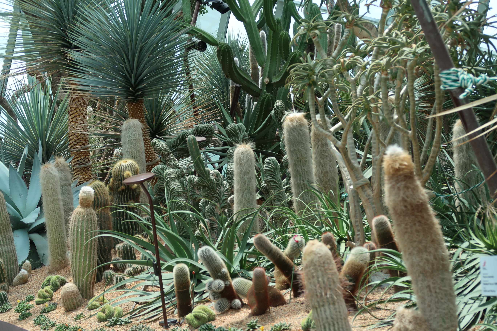
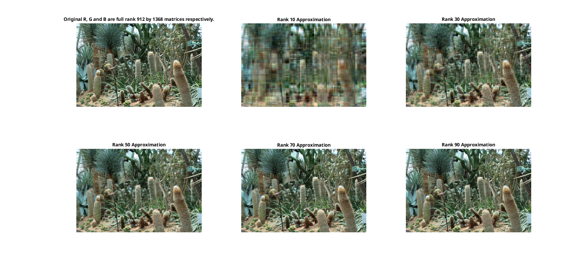
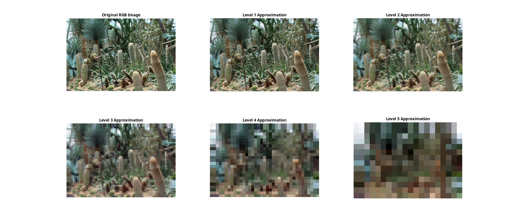

Image processing of RGB images
cactuses
In this page we split an RGB image into R, G, and B grayscale images, process them and combine them to obtain a new processed RGB image. See
rgb_imsplit_gbb3.m
,
rgb_svd_gbb3.m
and
rgb_db2_gbb3.m
for the detail.
Reading RGB Image

Splitting RGB into R, G and B
Low rank approximation

Multiresolution Decomposition (the Daubechies 2 wavelet)
